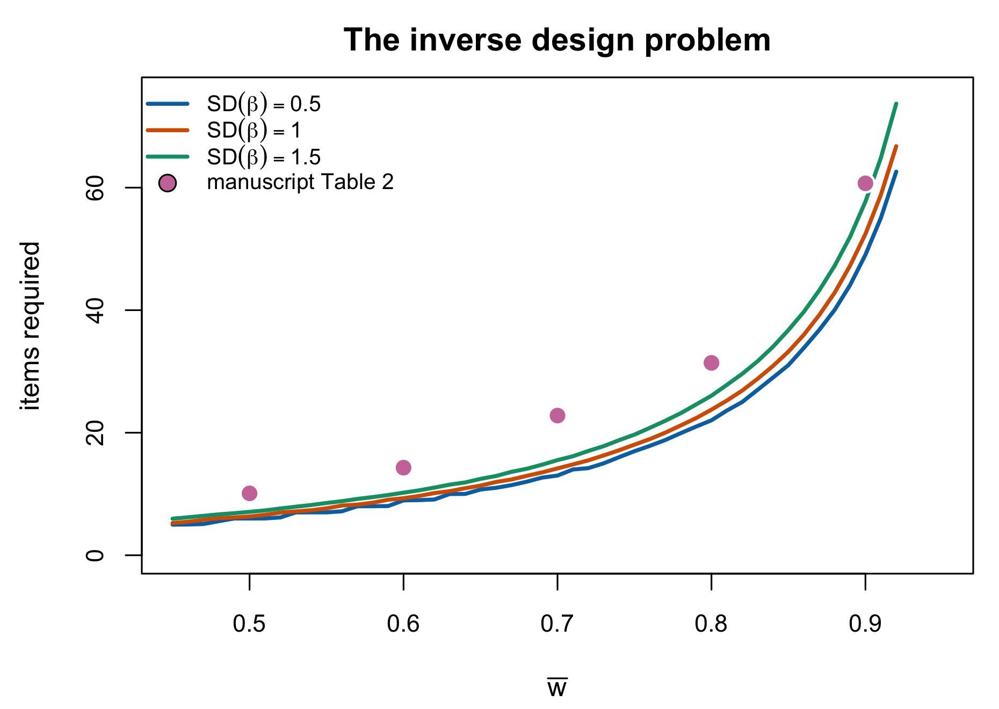

9 Designing for a Target Reliability
Chapter 8 said what reliability is. This chapter asks the question a simulation designer actually faces, which runs the other way: given a target, what design achieves it? The chapter is short and stops deliberately short of the companion book, which takes the same question up as an algorithm and a Monte Carlo study. What belongs here is why the problem has the shape it has, and what the manuscript’s answer to it looks like when read against the two questions Reviewer 1 asked about it.
9.1 The forward problem
Fix a design — a test length \(I\), a set of item difficulties \(\boldsymbol\beta\), a discrimination scale, and a population \(G\) — and the reliability follows. Under Equation 8.10 with \(\sigma^2_\theta = 1\),
\[ \bar w = \frac{1}{1 + \operatorname{E}_G[\mathcal{J}(\theta)^{-1}]}, \tag{9.1}\]
and every term on the right is computable by quadrature once the design is named. There is no difficulty here of any kind. Equation 9.1 is a deterministic function of the design.
Three of its properties set up everything that follows. It is increasing in test length, because information is additive (Section 7.1) and adding a positive term to \(\mathcal{J}\) at every \(\theta\) lowers \(\operatorname{E}_G[\mathcal{J}^{-1}]\). It is bounded above by one and approaches it slowly, since \(\mathcal{J}\) grows linearly in \(I\) while the reliability it buys grows like \(1 - O(I^{-1})\). And it depends on \(G\) and on \(\boldsymbol\beta\) only through their relationship, which is what targeting means.
9.2 The inverse problem
Now fix a target \(\rho^*\) and ask for a design. This is the problem the manuscript had to solve to treat reliability as a design factor at all, and the manuscript is correct that it has no closed-form solution.
The reason is worth stating precisely, because “no closed form” is often said loosely. Equation 9.1 inverts immediately for \(\operatorname{E}_G[\mathcal{J}^{-1}]\): the target \(\rho^*\) pins the required MSEM at \((1-\rho^*)/\rho^*\) exactly. What has no closed form is the step after that — the map from a design to \(\operatorname{E}_G[\mathcal{J} ^{-1}]\), which involves an integral of the reciprocal of a sum of logistic terms and inverts in none of its arguments. The obstruction is not the reliability definition. It is the information function.
So the inverse problem is solved numerically, and the design space is not one-dimensional: several levers move \(\bar w\), and a target fixes only their combined effect.
9.3 Four levers
Test length. The most direct, and the one the manuscript uses. Figure 9.1 shows the shape: convex, and steeply so at the top. Going from \(\bar w = 0.45\) to \(0.85\) costs roughly thirty items on this design; the next tenth costs more than that again. This is the practical content of the \(1 - O(I^{-1})\) approach to the ceiling, and it is why the \(0.9\) convention of Section 8.7 is expensive in a way the \(0.7\) convention is not.

Targeting. Moving item difficulties toward the mass of \(G\) raises information where it is used. Section 7.1 gave the mechanism; Section 8.6 gave the consequence for how much the choice of reliability functional matters.
The spread of item difficulties. A tighter difficulty distribution concentrates information where most people are, and buys reliability for free. The three curves in Figure 9.1 differ only in \(\operatorname{SD}(\beta)\), and at every target the tighter distribution needs fewer items. The effect is real and modest: widening from \(\operatorname{SD}(\beta) = 1\) to \(1.5\) costs roughly a tenth more items across the range. This is the classical observation that reliability rises as item-difficulty variance falls (Zhang et al. 2025, sec. 1, citing Gulliksen (1945) and Lord (1952)), and it is the lever Section 9.5 is about.
Discrimination scale. Under the 2PL, replacing \(\lambda_i\) by \(c\lambda_i\) changes both the multiplier and the response probability: \(\mathcal{J}_c(\theta)=\sum_i c^2\lambda_i^2\pi_{i,c}(\theta) [1-\pi_{i,c}(\theta)]\). Only the item peak at \(\theta=\beta_i\) scales as \(c^2\lambda_i^2/4\) without qualification; away from the peak, coverage moves as the item curve steepens. Thus \(c\) is a continuous lever, but its full information curve must be recomputed. This is the lever the reliability-targeting package calibrates against, and the package correctly recomputes \(\pi_{i,c}\) at every candidate scale. It is also, in production, one of the two levers the companion simulation’s realized ladder actually moved: each of its cells calibrates test length jointly with a bounded global discrimination multiplier \(c^*\), so “reliability” on that design’s axis names the bundle, not length alone — Section 25.3 displays the realized multipliers and draws the interpretive consequence (Lee 2026a).
Proposition 9.1 Calibrating on the scale lever. Restated from the reliability-targeting package (IRTsimrel, vignettes/theory-reliability.Rmd, Corollary 1); proof deferred
Let \(c^*_{\tilde\rho}\) and \(c^*_{\bar w}\) be scaling factors calibrated to the same target \(\rho^*\) under the average-information and MSEM functionals of Equation 8.13. On an interval where both functionals are continuous and strictly increasing and each has a unique root at \(\rho^*\),
\[ c^*_{\bar w} \;\ge\; c^*_{\tilde\rho} . \tag{9.2}\]
The monotonicity and unique-root condition is not automatic: \(\bar w(c)\) can be non-monotone, and without it Theorem 8.1 gives the pointwise comparison of the two functionals but not an ordering of their roots.
The ordering follows from Theorem 8.1 in one step — if \(\tilde\rho\) reaches the target at \(c^*_{\tilde\rho}\) then \(\bar w\) is still below it there, so \(\bar w\) needs at least as much scale — and the caveat is the interesting half. A calibration routine that assumes a unique root can converge to the wrong branch. The package states the condition explicitly rather than assuming it away, and this book restates it the same way; the numerical work belongs to the companion book (Section 9.6).
9.4 Why Table 2 looks the way it does
The manuscript solves the inverse problem by search. It specifies \(I\) from 5 to 100; for each \(I\) it generates 100 Monte Carlo replications with item difficulties drawn from \(N(0,1)\), “to represent various sample-item targeting conditions”; it computes reliability for each; and it reports, for each target, the average of the solutions for \(I\) across replications. Table 2 is that average, together with the RMSEM, separation, strata and test-information columns of Section 8.5.
R1’s first question, answered. Reviewer 1 asked: “Did the number of items differ depending on the desired reliability?” It did, and the fourth column of Table 2 is the answer: \(10.1\), \(14.3\), \(22.8\), \(31.4\) and \(60.7\) items for targets of \(0.5\) through \(0.9\). Test length was not a fixed condition crossed with reliability — it was the instrument by which reliability was set, which is why the two never appear as separate factors. The design table the reviewer asks for should say so in a sentence, because a reader who assumes a crossed design will read the whole simulation wrong.
Two features of that column deserve comment, and neither is a defect.
Targeting is randomized, not fixed. Because \(\boldsymbol\beta\) is redrawn each replication, the reported \(I\) is an average over targeting conditions rather than the length of any particular test. This is a deliberate and defensible choice — it integrates out an incidental design feature rather than fixing it arbitrarily, which is the same argument Zhang et al. (2025, sec. 1) give for sampling difficulties in the first place. It does mean the column answers “how long on average”, not “how long”.
The counts sit above this idealized calculation. The curves in Figure 9.1 are the population forward map Equation 9.1 with item parameters known. Against the matching \(\operatorname{SD}(\beta) = 1\) curve, the manuscript’s counts are higher at every target — roughly \(10\) against \(6\) at \(\bar w = 0.5\), and \(61\) against \(52\) at \(0.9\). The two quantities differ by construction: the figure uses a population functional with known item parameters, while Table 2 comes from the manuscript’s realized procedure. Their five differences do not identify the cause or establish an \(O(I^{-1})\) rate. Item-parameter uncertainty, ability estimation, finite samples and the manuscript’s calibration algorithm are candidate explanations to be reproduced in the companion simulation book; this theory chapter records only the descriptive gap.
The separation column of Table 2 is a genuine slip, and Section 8.5 records it (C-001).
9.5 Is \(N(0,1)\) realistic for item difficulties?
Reviewer 1’s second question was sharper: the standard normal is not obviously a realistic distribution for item difficulties, and the manuscript should support the choice from the literature as it does its other conditions.
The reference exists and is recent. Zhang et al. (2025) fit the Rasch model to 73 datasets from the Item Response Warehouse (Domingue et al. 2025) — filtered from 504 by excluding duplicated respondent–item pairs, non-binary items, matrices more than half missing, and five datasets with near-zero latent variance — and characterize the difficulty distributions directly. What matters for the comparison is that they rescale: difficulties are divided by the standard deviation of the latent trait estimates and centred, so their summaries are on exactly the metric that \(\beta \sim N(0,1)\) with \(\theta \sim N(0,1)\) assumes.
What they find has three parts.
- Spread. Most datasets have difficulty standard deviations at the low end of the observed range; real difficulties cluster more tightly than \(N(0,1)\), and much more tightly than the \(U(-2,2)\) that is the other common choice (Zhang et al. 2025, sec. 3.1). Their summary is given as a figure rather than a table, so no point estimate is quoted here.
- Skewness. Centred near zero with both signs present — approximately symmetric, and the assumption of symmetry survives.
- Kurtosis. Below the normal value of 3 in most datasets, averaging 2.48: real difficulty distributions are flatter with lighter tails than a normal.
So the honest answer to R1 is not that \(N(0,1)\) is realistic. It is that \(N(0,1)\) is conservative in the direction that matters here. Real difficulty distributions are tighter than \(N(0,1)\), tighter difficulties buy reliability more cheaply (Section 9.3), and a design calibrated under \(N(0,1)\) therefore uses more items than a realistic difficulty distribution would require at the same target. The assumption does not flatter the design. Figure 9.1 bounds the size of the effect: across the \(\operatorname{SD}(\beta) \in [0.5, 1.5]\) range the item requirement moves by roughly a tenth, so the simulation’s conclusions are not delicately poised on this choice.
Two further remarks, since the question invites them.
Zhang et al. also propose a method for generating realistic difficulties: resample an empirical dataset, then treat each estimated difficulty as the mean of a normal with standard deviation equal to its own standard error, producing a mixture that carries both the empirical shape and the estimation uncertainty (Zhang et al. 2025, sec. 4). That is the natural sensitivity analysis to run, and it is a design change rather than a theoretical one, so it belongs to the companion book.
And the finding cuts both ways for this programme. Section 8.6 showed that the choice among reliability functionals matters least when \(G\) concentrates where the items are; Zhang et al. show that real item sets concentrate more than the simulation assumes. Both point the same way: the idealizations here are the safe kind, in that relaxing them narrows the quantities this book is careful about rather than widening them.
9.6 Where this stops
Three things are deliberately absent.
The algorithm — how a calibration routine actually searches, warm-starts, and checks brackets — is the reliability-targeting package’s concern and is developed in its companion paper, which poses the inverse problem in the form this chapter has been using and solves it with two calibration schemes, one by quadrature root-finding and one by stochastic approximation (Lee 2026c); this book’s part in the division of labour stops at the problem statement. The Monte Carlo evidence on whether the achieved reliability matches the target, and with what variability across replications, is likewise the companion’s. And the proof of Proposition 9.1 and of the monotonicity conditions it needs is deferred to the same place.
What this chapter has supplied is what the companion book cannot assume: that the inverse problem is well posed but not closed-form, that its obstruction lies in the information function and not in the definition of reliability, that four levers move it and only one of them has a general ordering result, and that the design table answering Reviewer 1’s question is already in the manuscript and needs a sentence rather than a new analysis.
9.7 Sources and provenance
Equation 9.1 is Equation 8.10 under \(\sigma^2_\theta = 1\); nothing is added here. The description of the search procedure, the item range 5 to 100, the 100 replications, the \(N(0,1)\) difficulty draws and the averaging of solutions across replications are the manuscript’s § 6.1, read directly, as is Table 2 and its note.
Proposition 9.1 is Corollary 1 of the reliability-targeting package’s theory vignette (Lee 2026b), restated with its monotonicity caveat intact; the caveat is the package’s own wording and is preserved because dropping it would make the result stronger than it is. Its proof, and the numerical demonstration, stay in the package and its companion paper (Lee 2026c). The statement that the companion simulation’s ladder calibrated length and the multiplier \(c^*\) jointly is read from that volume’s frozen design rollup and displayed in Section 25.3.
The empirical characterization of item-difficulty distributions is Zhang et al. (2025), read directly: the 73-dataset corpus and its filtering in § 3, the rescaling to the latent-trait metric in § 3.0.1, and the spread, skewness and kurtosis findings in § 3.0.2 and § 3.1. The average kurtosis of 2.48 is theirs; the spread finding is reported qualitatively because their own summary is a figure. Gulliksen (1945) and Lord (1952) on the difficulty-variance-and-reliability relationship are cited through Zhang et al. under R5; neither is held.
Figure 9.1 is computed for this chapter from Equation 9.1 by quadrature, with item parameters known. It is the asymptotic analogue of the manuscript’s search and not a replication of it, and Section 9.4 says explicitly what the difference between the two consists of. No claim in this chapter rests on the figure beyond the direction and rough magnitude of the two comparisons it is used for. Each replicate uses prefixes of one fixed item bank, and the plotted means are frozen in tables/F-rel-items-summary.rds with a CSV mirror in tables/supplement/.